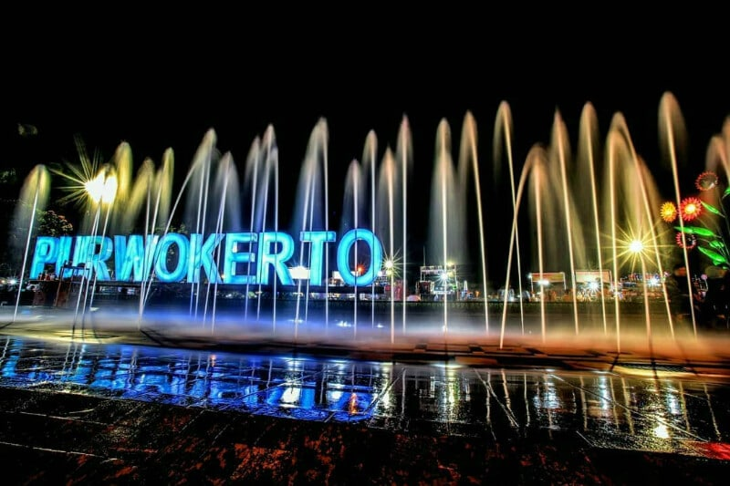
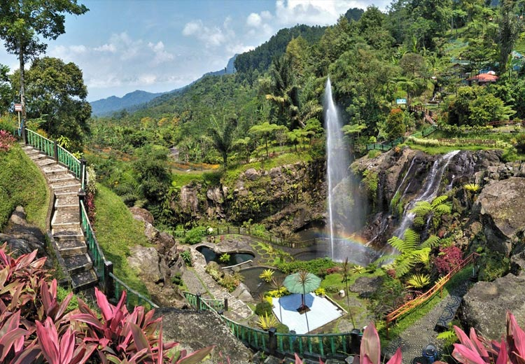
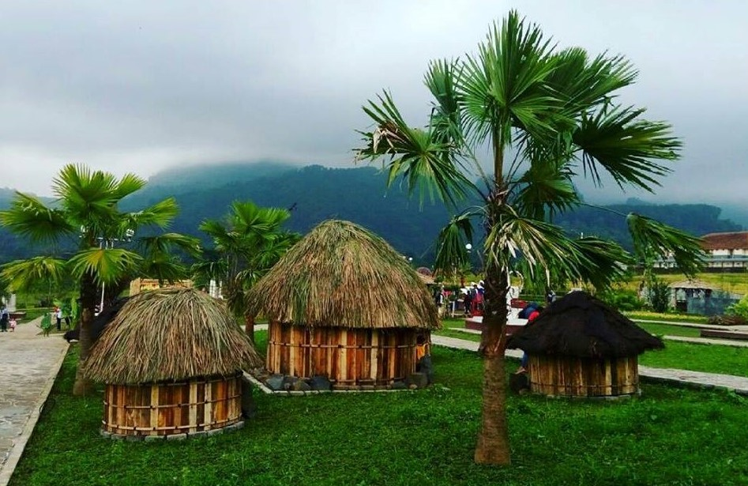
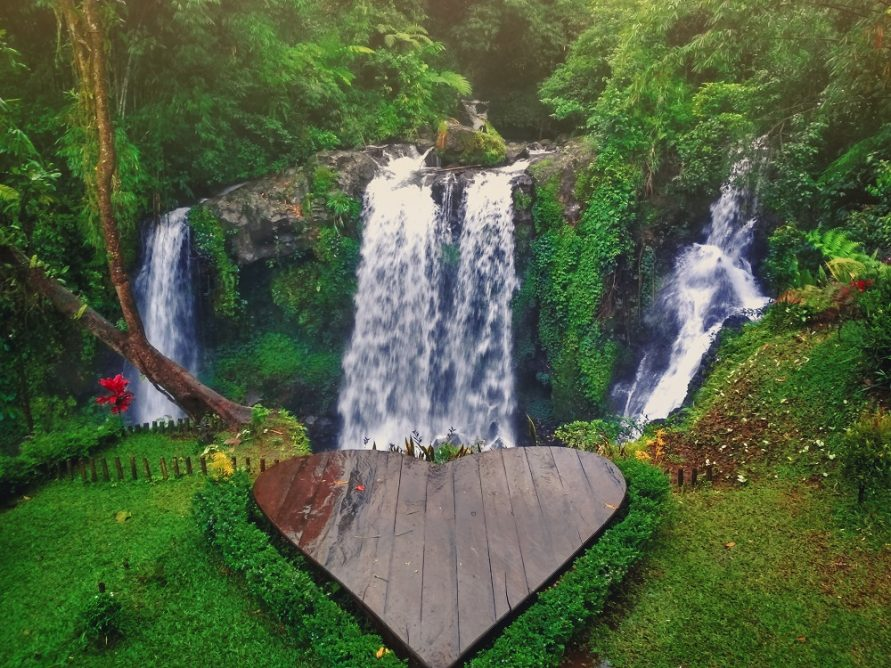
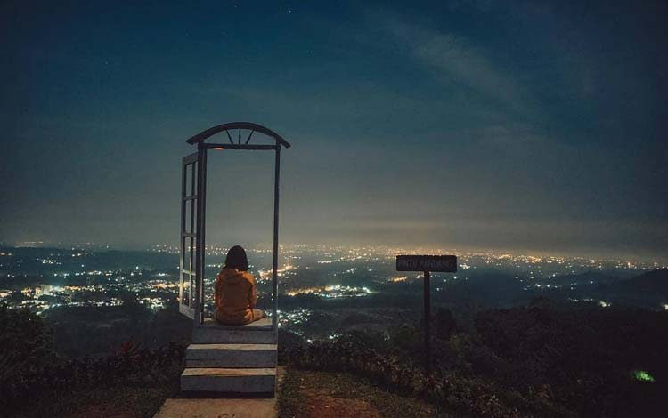
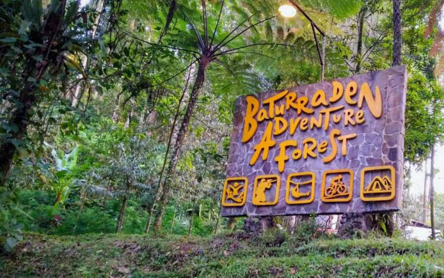

Kota Purwokerto

Purwokerto merupakan sebuah kota berkembang di bagian barat daya Propinsi Jawa Tengah, Purwokerto sendiri merupakan ibukota Kabupaten Banyumas. Letak kota Purwokerto secara geografis termasuk kategori daerah dataran tinggi karena letaknya persis berada di kaki Gunung terbesar di Jawa Tengah yaitu Gunung Slamet, karena letaknya berada di daerah dataran tinggi jadi sebagian daerah di Kota Purwokerto memiliki udara yang sejuk apalagi di pagi hari.
Meskipun Purwokerto hanyalah sebatas Ibukota Kabupaten akan tetapi kota ini digolongkan sebagai Ibukota Kabupaten yang maju dan perkembangannya dari tahun ke tahun tergolong pesat. sebagai indikatornya adalah hampir semua fasilitas hadir di kota ini dari mulai Pusat Perbelanjaan, Restoran cepat saji, Pusat Pertokoan, Sarana Olahraga, Pusat Wisata Kuliner, Hotel berbintang (kelas Internasional), Sarana Rekreasi Keluarga, Pusat Pelayanan Kesehatan, dan lain sebagainya.
Purwokerto dikenal sebagai kota transit karena letaknya berada ditengah-tengah antara kota-kota besar misalnya antara Bandung-Yogyakarta, Jakarta-Yogyakarta, Bandung-Semarang, dan lain sebagainya. biasanya orang yang akan melalukan perjalanan antar kota besar tersebut meluangkan waktunya untuk transit beristirahat atau berwisata di kota ini.
Banyak orang yang merasa betah tinggal dikota ini, dengan alasan:
- Aman, jarang sekali terjadi kasus kriminal besar seperti terorisme, perampokan, kerusuhan, dan lain sebagainya terjadi dikota ini
- Nyaman, kota ini meskipun tergolong kota besar akan tetapi bebas macet
- Budaya masih kental
- Akses ke kota lain mudah
- Sejuk karena berada di dataran tinggi
- Fasilitas tergolong lengkap
- Biaya hidup murah
Lokawisata Baturraden

Tempat wisata di Purwokerto ini paling populer dan sangat direkomendasikan untuk kamu kunjungi karena memiliki pemandangan alam yang sangat menakjubkan yaitu hamparan Gunung Slamet di sisi utara. Selain itu, ada banyak pilihan wahana wisata sungguh menjadi kelebihannya tersendiri sebagai daya tarik dari tempat wisata ini.
Wahana seperti kolam renang, sepeda air, terapi ikan dan pemandian air panas bisa kamu temukan di sana dengan mudahnya. Wah seru sekali pasti. Selain bisa bermain, pastinya spot untuk berfoto ria sudah tersedia di sana dan siap menghiasi dinding Instagrammu.
Jika kamu suka dengan dunia satwa, tenang saja, kebun binatang mini yang tersedia di sana juga bisa menjadi alernatif bagimu. Selain itu, pengalaman menikmati pemandangan luar biasa dari pegunungan yang asri dan sejuk menjadi hal yang pasti akan sangat sulit dilupakan dari perjalanan ini.
Bahkan hanya dengan 14 ribu rupiah saja kamu sudah bisa memasuki kawasan ini. Biaya masuk yang masih terjangkau itu pasti tidak akan membebanimu jika dibandingkan dengan pengalaman seru dan berkesan yang akan kamu dapatkan nantinya di Baturadden.
Small World

Kamu belum kesampaian mengelilingi dunia dan melihat langsung tempat wisata di dunia? Daripada berkhayal terus, mending kunjungi dulu deh tempat yang satu ini.
Di taman Miniatur Dunia kamu akan menemukan banyak miniatur taman sekaligus gedung-gedung yang unik di seluruh dunia. Keren kan? Kamu bisa melihat miniatur dari kincir angin yang ada di Belanda, atau Menara Eifel dari Paris dan miniatur-miniatur keren lainnya yang pasti ukurannya lebih kecil.
Biaya masuk hanya 15 ribu rupiah di hari biasa dan 20 ribu di akhir pekan. Dan tepatnya berada di Jalan Raya Baturraden Barat.
Curug Jenggala

Di sebuah desa bernama Petahunan, masih di sekitar daerah baturraden, ada sebuah tempat wisata hits yang bisa kamu temui di sana. Namanya curug Jenggala. Tempatnya cukup tersembunyi. Tapi pemandangan yang disuguhkan bisa membuat kamu melongo. Ada air terjun yang mengalir deras di sana dan tumpah ke bebatuan di bawahnya sehingga membentuk sungai dengan nuansa air berwarna putih susu karena disebabkan arus air bervolume kecil tapi memiliki arus yang kencang.
Ada jembatan yang menghubungkan antara sisi kanan dan kiri sungai sehingga menambah keeksotisan pemandangan di sana. Selain kamu bisa berfoto ria di jembatan ini, ada satu spot foto lagi yang tidak kalah kerennya. Sebuah kayu berbentuk hati sengaja dsediakan tepat di dataran seberang air terjun. Sehingga menimbulkan suasana romantis dan sangat cocok buat pasangan yang ingin mengabadikan cintanya lewat foto berdua di atas papan berbentuk hati itu. Biaya masuk ke sana sekitar 8 ribu rupiah saja loh. Wah maih aman lah ya kantong.
Bukit Bintang Baturraden

Saatnya beristirahat di malam hari. Tapi jangan lupa menyaksikan dulu bukit bintang yang masih berada di kawasan baturraden tepatnya di Jl. Pangeran Limboro. Hanya dengan tiket masuk 3 ribu rupiah saja, mari menikmati pemandangan bukit berbitang di sana sambil bersantai dan siapkan pakaian tebal karena hawa malam yang dingin di bukit ini bisa menusuk-nusuk tulang.
Baturraden Adventure Forest

Kamu yang memiliki jiwa bertualang namun belum berani keluar ke hutan bebas. Atau memilki anak yang hobi bertualang namun kamu masih khawtir mengajakknya ke hutan bebas tanpa bimbingan dari yang profesional, yuk mampir saja ke Baturraden adventure. Di sana kamu akan berwisata sekaigus mengedukasi diri dan keluarga tentang ilmu mengenal dan mencinta alam.
Di sana disediakan juga paket wisata seperti petualangan hutan, sungai, kabut dan gunung. Paketnya memiliki harga yang berbeda-beda. Kamu wajib pastikan dulu mana yang sesuai dengan budget.
Ada juga terbentang pegunungan dan hutan dengan pohon pinus yang sangat memanjakan mata saat dipandang serta menjadikan petualangan kita menjadi lebih seru namun tetap aman karena didampingi oleh orang yang profesional.Selain berpetualang, kamu juga bisa menyempatka diri beroto denga latar belakang pegunungan dan pohon pinus yang tumbuh rapi di sana.